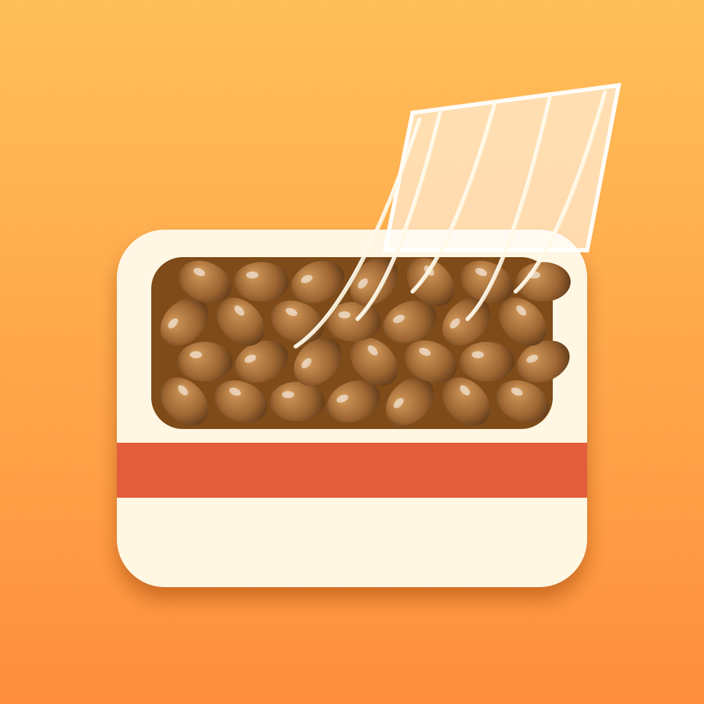

絶対破れる納豆フィルム
納豆パックのフィルムを剥がして糸を巻き取る3Dゲーム（iPhone）
遊び方
納豆パックのフィルムを剥がして、のびる糸をぜんぶ巻き取るまでのタイムを競います。
- 剥がす：光っている角をつまんで、ゆっくり持ち上げます。速く引くと破れます
- 巻き取る：剥がしたら高く持ち上げて糸をピンと張り、円を描くように動かしてクルクル巻き取ります
- 6種類の納豆：小粒・ひきわり・大粒・黒豆・わら納豆など。種類で糸の出かたや切れやすさがちがいます
- 図鑑・実績：遊ぶほど新しい納豆に出会えます。毎日ちがう「今日の納豆」もあります
よくある質問
途中でやめたい
遊んでいる途中に左上の ❚❚ を押すと、つづける・はじめから・タイトルへもどる を選べます。
音を消したい
画面右上の ♪ ボタンで、音のオン・オフを切り替えられます。
新しい納豆が選べない
遊んだパックの数やランクで、新しい納豆が増えていきます。図鑑に解放の条件が出ています。
記録を消したい・引き継ぎたい
記録はこの iPhone の中にだけ保存しています。アプリを削除すると記録も消えます。ほかの端末への引き継ぎにはまだ対応していません。
お問い合わせ
不具合やご要望は、メールでお知らせください。お使いの iPhone の機種と iOS のバージョンを書いていただけると助かります。